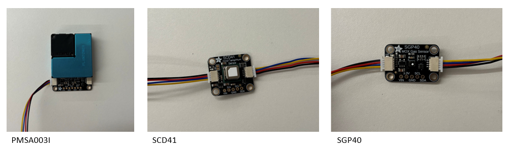
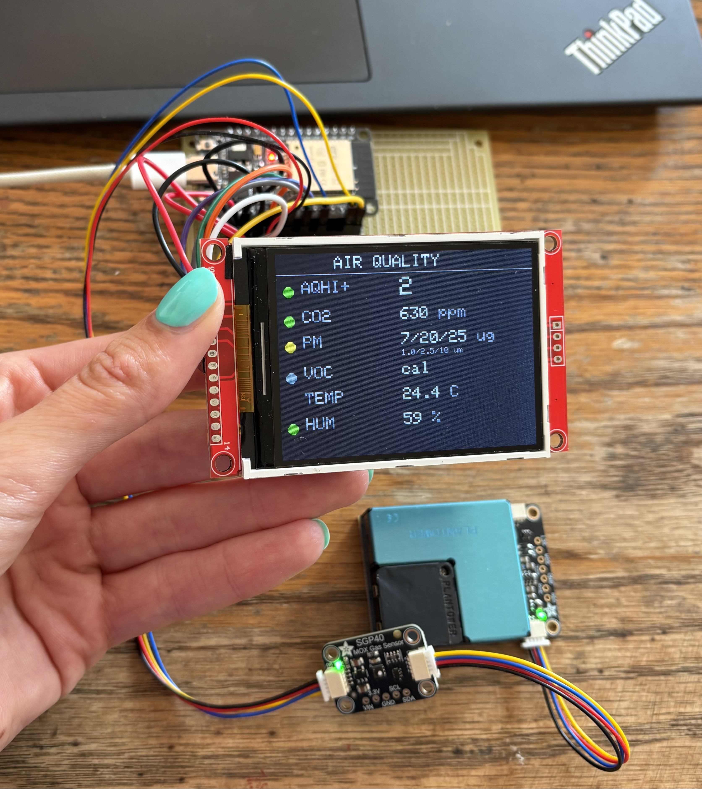

Motivation
My parents live in British Columbia's Okanagan Valley, where wildfire smoke has become a serious issue in the summer. During bad smoke events the air outside can become very hazardous, and although there are sites that monitor air quality around town, its hard to tell what the air quality is like inside the house or right outside. I wanted to build them a simple device they could glance at to determine if measures should be taken to improve the air quality inside the house during severe wildfire events.
- The problem: during smoke season it is hard to know indoor air quality without a real instrument.
- The goal: a glanceable, always-on monitor that flags when a reading leaves the healthy range, readable by anyone without technical knowledge.
- The scope: a full design-build-test project spanning sensors, embedded firmware, and a custom 3D-printed enclosure.
Sensors Used
The monitor measures the pollutants and conditions that matter most for indoor air quality, using three Adafruit sensor breakouts. All three communicate over a shared I2C bus and chain together with STEMMA QT connectors, which kept the wiring clean and the sensors easy to reposition inside the enclosure.
- PMSA003I (particulate matter): a laser particle counter with an active fan that measures fine airborne particulate at three size ranges, PM1.0, PM2.5, and PM10. PM2.5 is the key health number during wildfire smoke, so this is the most important sensor for the intended use.
- SCD-41 (CO2, temperature, humidity): a photoacoustic CO2 sensor that also reports temperature and relative humidity. CO2 is the everyday indicator of how well a room is ventilated, and the temperature and humidity data double as inputs to the VOC sensor.
- SGP40 (volatile organic compounds): a metal-oxide gas sensor that outputs a VOC Index, a relative measure of gases from sources like cooking, cleaning products, and off-gassing. It self-calibrates to the room's baseline over time.
| Sensor | Measures | Interface |
|---|---|---|
| PMSA003I | PM1.0 / PM2.5 / PM10 particulate | I2C (STEMMA QT) |
| SCD-41 | CO2, temperature, humidity | I2C (STEMMA QT) |
| SGP40 | VOC Index | I2C (STEMMA QT) |

Electronics Integration & Code Logic
An ESP32 microcontroller runs the whole system. It reads all three sensors over I2C and drives a 2.8 inch colour TFT display over a separate SPI bus, so the two interfaces never conflict. I wrote the firmware in C++ in the Arduino environment, bringing the system up one piece at a time so that any problem had a single, clear cause.
- Bus architecture: the three sensors share one I2C bus (each at its own address), while the display runs on its own SPI bus. Keeping them separate avoided contention and simplified debugging.
- Sensor fusion: the VOC sensor produces more accurate readings when it is given the current temperature and humidity. The firmware feeds the SCD-41's live temperature and humidity into the SGP40's VOC calculation, so the sensors work together rather than in isolation.
- Timing: the loop is paced to the CO2 sensor's five second measurement cadence, with a retry on the particulate sensor to handle the occasional missed data packet.
- Air quality index: the firmware computes an AQHI-style index from PM2.5, following Environment Canada's wildfire-smoke methodology (which uses PM2.5 alone during smoke events). It is displayed as the headline number with the same colour bands the public sees on official forecasts.
- At-a-glance status: every reading has a coloured status dot (green, yellow, red) driven by health-based thresholds, so an out-of-range value flags itself without the reader needing to interpret the numbers.

Housing & Full System
For an air quality monitor, the enclosure is part of the instrument rather than just a cover. A sealed box would starve the sensors of the air they need to sample and would trap heat that biases the temperature and humidity readings, so the housing was designed around airflow and thermal isolation from the start. I modelled it in SolidWorks and designed it for 3D printing.
- Directed airflow: vents are placed to force a cross-flow through the interior rather than venting every face, which would leave a stagnant dead zone around the sensors. Intake sits low near the particulate sensor's fan, exhaust sits high on the opposite side.
- Thermal isolation: the CO2/temperature/humidity sensor is positioned away from the heat generated by the ESP32 and the display backlight, near an intake, so its temperature and humidity readings stay accurate.
- Serviceability: internal standoffs mount the electronics board, the microcontroller and display are socketed rather than soldered down, and the sensors stay on connectors so any component can be swapped without rebuilding the unit.

Future Improvements
The monitor works well as a standalone unit, but there are a few directions I would like to take it next.
- Wireless connectivity: the ESP32 has WiFi and Bluetooth built in, so no new hardware is needed to add them.
- Housing optimization: validate the airflow design experimentally (smoke-based flow visualization and comparing enclosed versus open-air sensor response), then refine vent sizing and placement based on the results rather than on reasoning alone.
- Outdoor capability: adapt the enclosure for a covered outdoor location.
- Rain-shielded or downward-facing vents and a shielded cable entry to keep out wind-driven moisture.
- A replaceable coarse mesh over the intakes to keep insects and debris off the sensor optics.
- A condensation drain and a UV-stable, weather-tolerant print material for long-term outdoor service.
- Expanded sensing: adding an ozone sensor would allow a full Air Quality Health Index rather than the PM2.5-only version, capturing days where air quality is driven by ozone rather than particulate.
Focus
End-to-end design and build: sensor selection and integration, embedded firmware, and airflow-driven enclosure design for a real-world home instrument.
- Type
- Personal Project
- Timeframe
- 2026
- Role
- Full System Design
- Domain
- Mechatronics · Enclosure Design
- Key Tools
- SolidWorks · 3D Printing · ESP32 · C++ · I2C/SPI · Soldering